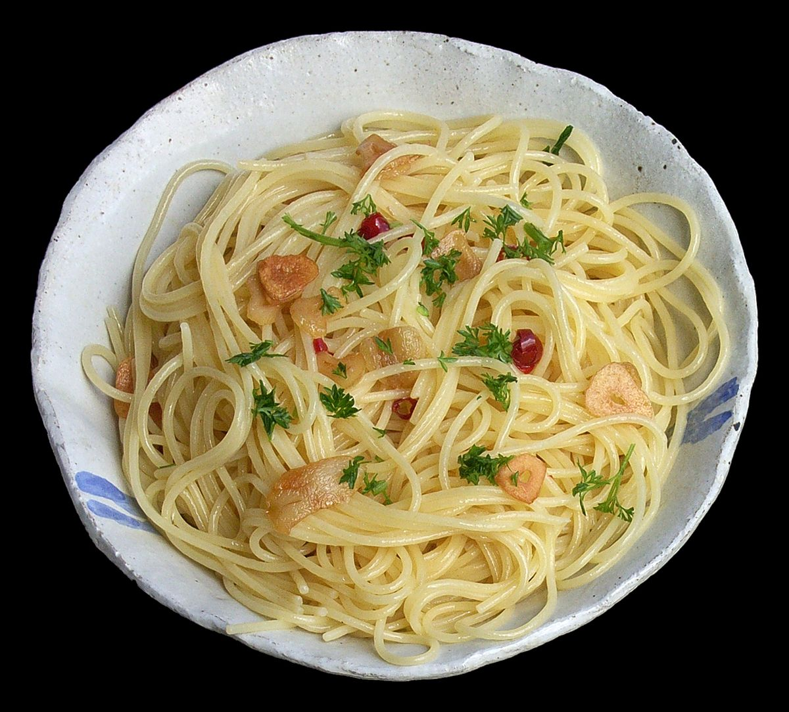

Спагетти Аglio e Olio
Домой

Описание
Классическое итальянское блюдо, которое покоряет
простотой и ярким вкусом.
Основа рецепта — чеснок, оливковое масло и
перец чили, создающие ароматную основу для пасты.
Идеально подходит для быстрого ужина или
когда хочется ощутить атмосферу итальянской кухни.
Готовится всего за 20 минут, а результат впечатляет:
нежные спагетти в масляно-чесночном соусе с
пикантной ноткой перца.
Дополнить блюдо можно свежей зеленью или тертым сыром.
Ингредиенты
- Спагетти — 200 г
- Оливковое масло — 4 ст. л.
- Чеснок — 4 зубчика (тонко нарезать)
- Перец чили — 1 шт. (или щепотка хлопьев)
- Свежая петрушка — горсть (мелко порубить)
- Соль — по вкусу
- Лимонная цедра (по желанию)
Шаги
-
Вскипятите воду в кастрюле, добавьте щепотку соли.
Варите спагетти 8–10 минут (до состояния al dente).
-
На сковороде разогрейте оливковое масло на среднем огне.
Добавьте чеснок и перец чили, обжаривайте 1–2 минуты,
пока чеснок не станет золотистым.
-
Отложите ½ стакана воды от варки пасты, слейте спагетти.
-
Переложите пасту в сковороду с чесноком, перемешайте.
Добавьте немного воды от варки, чтобы соус стал гладким.
-
Посыпьте петрушкой, приправьте солью.
Подавайте сразу, украсив лимонной цедрой.